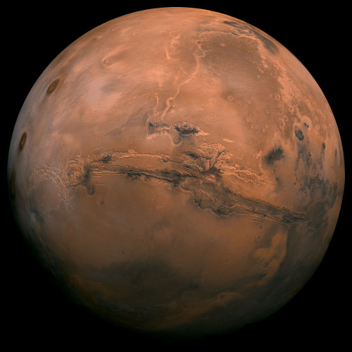
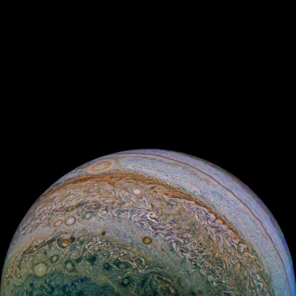

The visible spectrum is the portion of the electromagnetic spectrum that is visible to the human eye. Electromagnetic radiation in this range of wavelengths is called visible light or simply light. A typical human eye will respond to wavelengths from about 380 to about 750 nanometers. In terms of frequency, this corresponds to a band in the vicinity of 400-790 terahertz. These boundaries are not sharply defined and may vary per individual. Under optimal conditions these limits of human perception can extend to 310 nm (ultraviolet) and 1100 nm (near infrared). The optical spectrum is sometimes considered to be the same as the visible spectrum, but some authors define the term more broadly, to include the ultraviolet and infrared parts of the electromagnetic spectrum as well.
The spectrum does not contain all the colors that the human visual system can distinguish. Unsaturated colors such as pink, or purple variations like magenta, for example, are absent because they can only be made from a mix of multiple wavelengths. Colors containing only one wavelength are also called pure colors or spectral colors.

